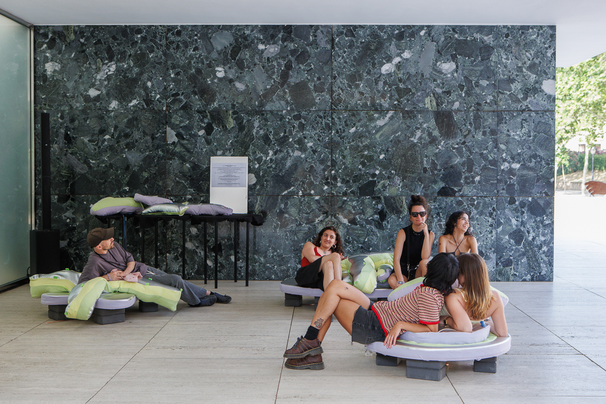
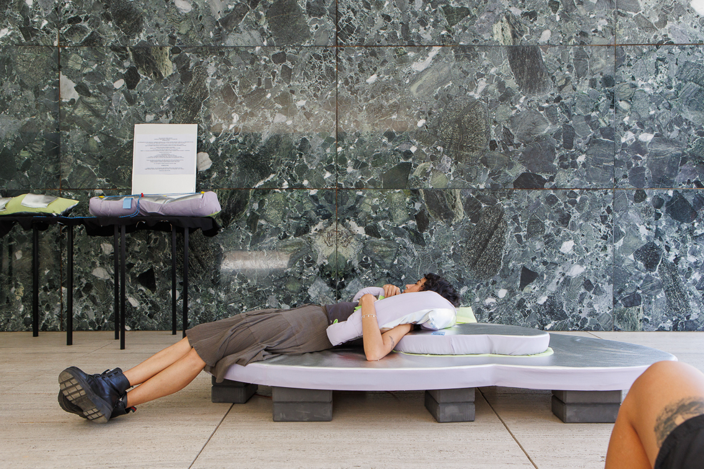
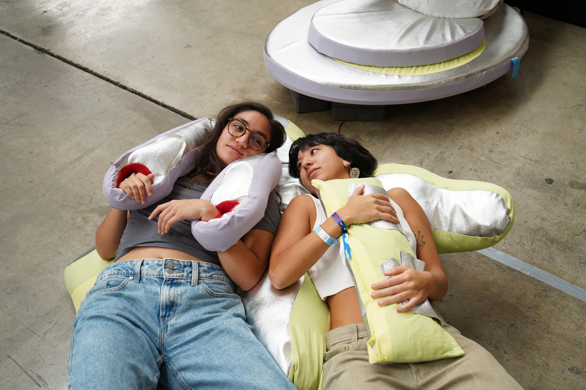

This installation responds to the need of attending music festivals without crowds, with moderate music volume, accessible to people with reduced mobility. It's a proposal that becomes an experimental space open to feel the music with your body.
A series of haptic and sensory interfaces take the form of reclining supports or wearables that can be worn and shared with others, allowing music to be experienced through the skin.
We collaborated with music artist Xavi Manzanares (@xamanza) who created a music console that connects to the wearable via OSC. Through the console, people can modify the music, and the wearable's vibrations shift simultaneously, creating a unique, immersive experience.


